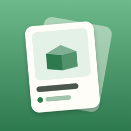

물건 도감 · ThingDex개인정보 처리방침
시행일: 2026년 11월 1일 · 적용 대상: iOS 앱 ‘물건 도감’ 1.0 이상
물건 도감 개발자(이하 ‘운영자’)는 ‘물건 도감’ 앱(이하 ‘앱’)을 이용하는 분의 개인정보를 소중히 여깁니다. 앱은 회원가입·로그인·광고·분석 도구 없이 iPhone 안에서만 동작하며, 운영자는 이용자의 개인정보를 수집하지 않습니다.
1. 수집하는 개인정보
운영자는 어떤 개인정보도 수집·저장·전송하지 않습니다. 앱에는 서버가 없고, 외부 분석·광고·추적 도구(SDK)를 쓰지 않습니다.
2. 기기 안에만 저장되는 정보
이용자가 직접 입력한 아래 정보는 이용자의 iPhone 안(앱 저장 공간)에만 저장되며, 운영자를 포함한 누구에게도 전송되지 않습니다.
| 정보 | 용도 |
|---|---|
| 물건 이름, 보관 장소, 등록·수정 날짜 | 물건 목록과 검색 |
| 물건 사진 | 물건 카드와 상세 화면 표시. 앱에서 사진을 찍거나 고를 때 위치정보(GPS) 등 촬영 정보를 제거합니다. 백업 파일을 가져올 때는 파일 안의 사진을 그대로 저장합니다. |
| 효과음·진동·정렬 설정 | 앱 설정 유지 |
이용자가 iPhone의 기기 백업(iCloud 백업 또는 컴퓨터 백업)을 켜 두었다면, iOS가 다른 앱 데이터와 마찬가지로 이 정보를 기기 백업에 포함할 수 있습니다. 이는 Apple의 기능이며 운영자는 그 내용을 볼 수 없습니다.
이 정보는 이용자가 앱에서 지우거나 앱을 삭제할 때 기기에서 함께 지워집니다. 앱에서 삭제한 물건은 ‘최근 삭제한 물건’에 30일 동안 보관되며, 30일이 지나면 다음에 앱을 열 때 자동으로 지워집니다.
3. 카메라와 사진 접근
- 카메라: ‘사진 찍기’를 누를 때만 iOS가 허용을 묻습니다. 촬영한 사진은 물건 사진으로만 쓰입니다. 허용하지 않아도 사진 없이 물건을 등록할 수 있습니다.
- 사진 앨범: iOS의 사진 선택 화면을 사용하므로 앱은 이용자가 고른 사진 1장에만 접근하며, 앨범 전체를 읽지 않습니다.
4. 백업 파일
‘내 물건 백업하기’로 만든 백업 파일(.thingdex)은 이용자가 고른 위치(파일 앱, iCloud Drive, AirDrop, 메일 등)로만 저장·전송됩니다. 운영자는 백업 파일을 받거나 볼 수 없습니다.
백업 파일은 암호화되지 않으며 물건 사진과 보관 장소가 그대로 들어 있습니다. 다른 사람에게 보내거나 공유할 때는 주의해 주세요. iCloud Drive 등 Apple 서비스에 저장한 파일은 Apple의 개인정보 처리방침을 따릅니다.
5. 인앱 구입
현재 앱에서 판매하는 인앱 구입은 없습니다. 앞으로 추가되면 결제는 Apple App Store가 처리하며, 운영자는 이용자의 이름, 결제 수단, Apple 계정 정보를 받지 않습니다.
6. 제3자 제공·처리 위탁·국외 이전
수집하는 개인정보가 없으므로 제3자에게 제공하거나, 처리를 위탁하거나, 국외로 이전하지 않습니다.
7. 보유 기간과 파기
운영자가 보유하는 개인정보는 없습니다. 앱에서 삭제한 물건은 ‘최근 삭제한 물건’에 30일 동안 보관되며, 30일이 지나면 다음에 앱을 열 때 지워집니다. 그곳에서 영구 삭제하거나 앱을 삭제하면 바로 파기됩니다.
8. 이용자의 권리
이용자는 앱 안에서 언제든지 자신의 정보를 보고, 고치고, 지울 수 있습니다. 운영자가 보관하는 정보가 없으므로 별도의 열람·삭제 요청 절차는 필요하지 않으며, 궁금한 점은 아래 연락처로 문의할 수 있습니다.
9. 아동의 개인정보
앱은 누구의 개인정보도 수집하지 않으며, 만 14세 미만 아동의 정보도 수집하지 않습니다.
10. 안전성 확보 조치
정보는 iOS의 앱 저장 공간(다른 앱이 접근할 수 없는 영역)에 저장되며, iPhone 잠금과 데이터 보호 기능의 보호를 받습니다. 앱은 정보를 인터넷으로 보내지 않습니다.
11. 개인정보 보호책임자 및 문의
보호책임자: 물건 도감 개발자
연락처: wlsdntjd123@gmail.com
12. 처리방침의 변경
이 방침이 바뀌면 이 페이지와 앱 업데이트 안내를 통해 시행 7일 전에 알립니다. 앱이 정보를 수집하게 되는 변경은 이용자의 동의를 먼저 받습니다.
Privacy Policy
Effective date: November 1, 2026 · Applies to the iOS app “ThingDex” 1.0 and later
The ThingDex developer (“we”) makes ThingDex (“the app”). The app works entirely on your iPhone, with no account, login, ads or analytics. We do not collect any personal information.
1. Information we collect
None. We do not collect, store or receive any personal information. The app has no server and uses no third-party analytics, advertising or tracking SDKs.
2. Information stored only on your device
What you enter is saved only on your iPhone, inside the app’s own storage, and is never sent to us or anyone else:
| Information | Used for |
|---|---|
| Thing names, storage places, dates added or edited | Your collection and search |
| Photos of things | Showing cards and details. Location (GPS) and other capture metadata are removed when you take or choose a photo in the app. Photos imported from a backup file are saved as they are in that file. |
| Sound, haptics and sort settings | Remembering your settings |
If you have turned on iPhone backup (iCloud Backup or a computer backup), iOS may include this information in that backup like other app data. That is an Apple feature and we cannot see its contents.
This information is removed when you delete it in the app or delete the app. Things you delete stay in Recently Deleted for 30 days and are removed automatically the next time you open the app after that.
3. Camera and photos
- Camera: iOS asks for permission only when you tap Take Photo. Photos are used only as pictures of your things. You can register things without a photo if you decline.
- Photo library: The app uses the iOS photo picker, so it only receives the single photo you choose and never reads your whole library.
4. Backup files
A backup file (.thingdex) made with Back Up My Things is saved or sent only where you choose (Files, iCloud Drive, AirDrop, Mail and so on). We cannot receive or see it.
Backup files are not encrypted and contain your photos and storage places. Take care when sending or sharing them. Files you keep in Apple services such as iCloud Drive are covered by Apple’s privacy policy.
5. In-app purchase
The app currently sells no in-app purchases. If one is added later, payment will be processed by the Apple App Store, and we will not receive your name, payment method or Apple Account details.
6. Sharing, processors and transfers
Because we collect no personal information, we do not share it, use processors for it, or transfer it abroad.
7. Retention and deletion
We hold no personal information. Things you delete stay in Recently Deleted for 30 days and are removed the next time you open the app after that. Deleting them permanently there, or deleting the app, removes them right away.
8. Your rights
You can view, correct and delete your information in the app at any time. As we keep nothing, no access or deletion request is needed; you are welcome to contact us with any question.
9. Children
The app collects no personal information from anyone, including children.
10. Security
Information is kept in the app’s private iOS storage, which other apps cannot access, and is protected by your iPhone passcode and Data Protection. The app does not send it over the internet.
11. Contact
Privacy contact: The ThingDex developer
Email: wlsdntjd123@gmail.com
12. Changes
If this policy changes, we will post it here and mention it in the app update notes at least 7 days before it takes effect. Any change that would make the app collect information will ask for your consent first.